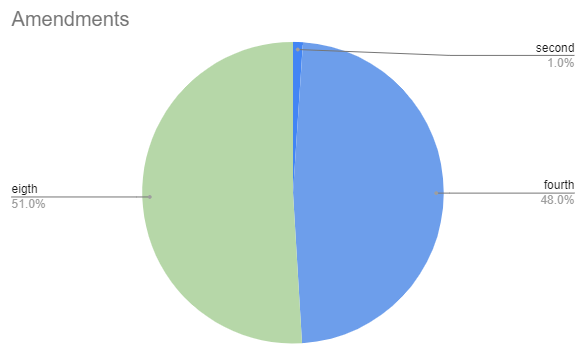

A Legal Analytics Platform
At Legal Forensics, we provide unparalleled access to a comprehensive legal dataset that forms the backbone of our cutting-edge platform.
Empowering legal professionals with the tools to uncover critical insights and make informed decisions, our curated data transforms information into actionable intelligence.
Experience the future of legal research and analytics with advanced capabilities designed to streamline your workflow and enhance your strategic planning. Join us in revolutionizing the way legal research is conducted and unlock the true potential of your legal practice.
Legal Professionals: Leverage our comprehensive data lake for in-depth legal research and gain insights into legal trends.
Corporations: Research how courts have handled issues like patent disputes and employment discrimination.
Individuals: Research into legal cases involving contractor disputes, landlord-tenant conflicts, immigration matters, etc.
Non-Profits: Access crucial legal data to support your mission. Understand legal precedents in areas such as grant compliance, volunteer liability, and organizational governance to ensure your operations are legally sound.
Custom Dashboards - Visualizations to your needs.
Custom Legal Analytics - Trends, Legal pricniples applied, rulings and more.
Curated Datasets - Real Estate, Cannbis, Patent, Employment Discrimination etc.
APIs - Query our database according to your needs.
We are eager to discuss your specific needs and collaborate with you as our beta customer. Please contact us to get started.